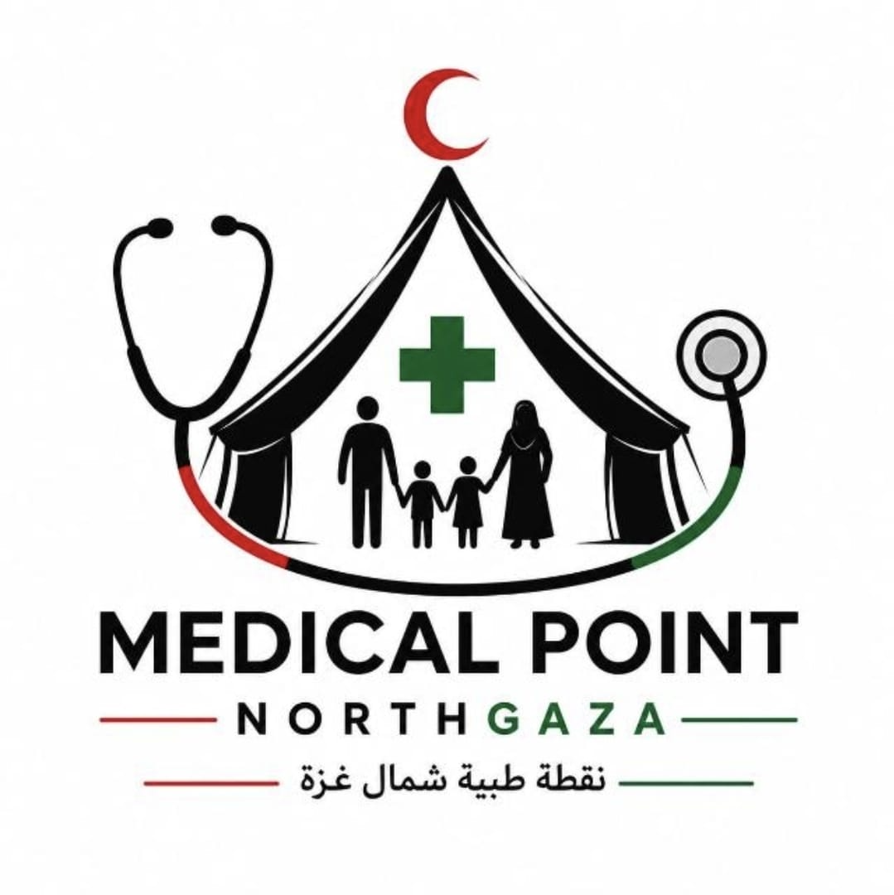
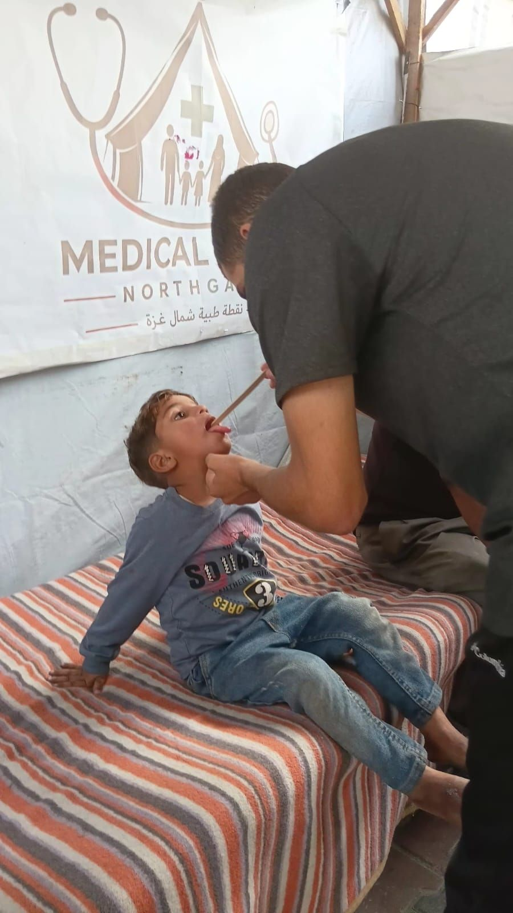
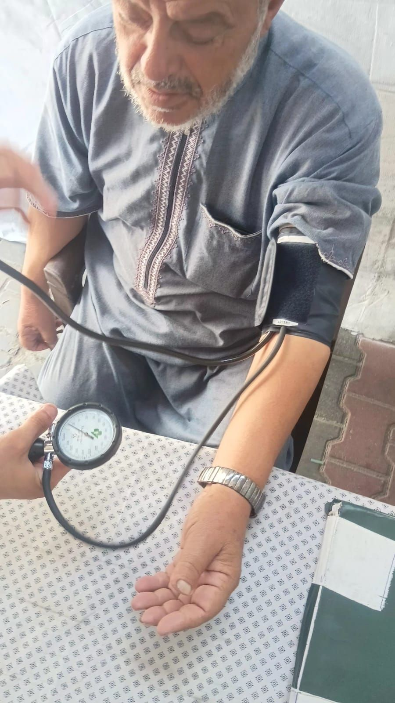
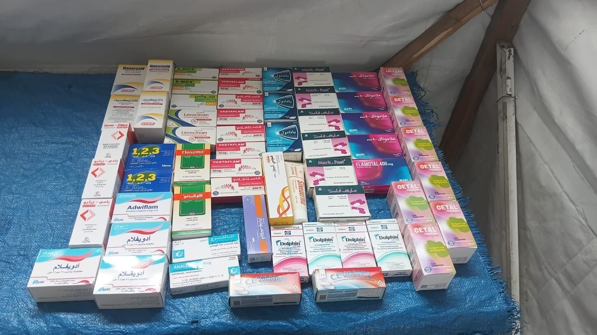
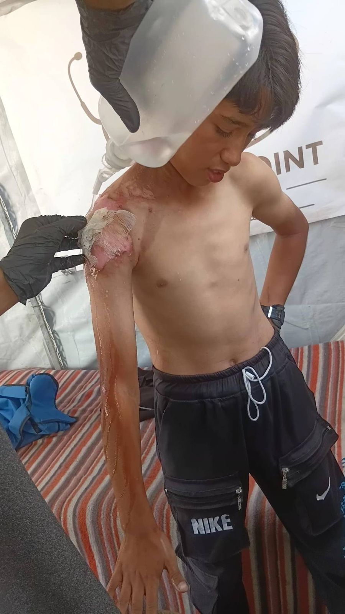
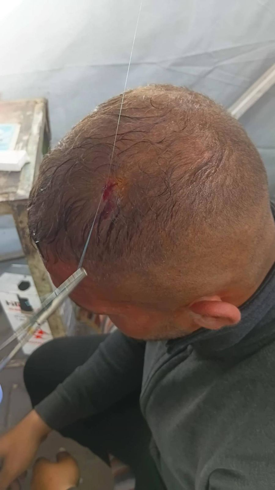
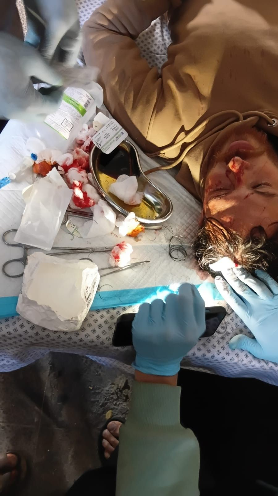
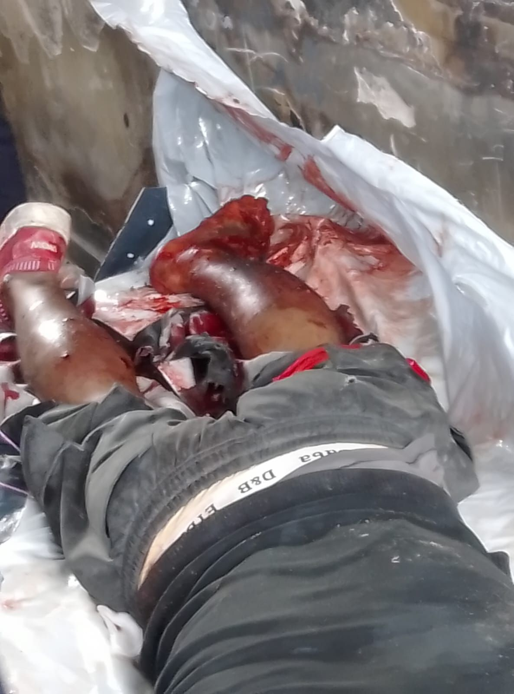
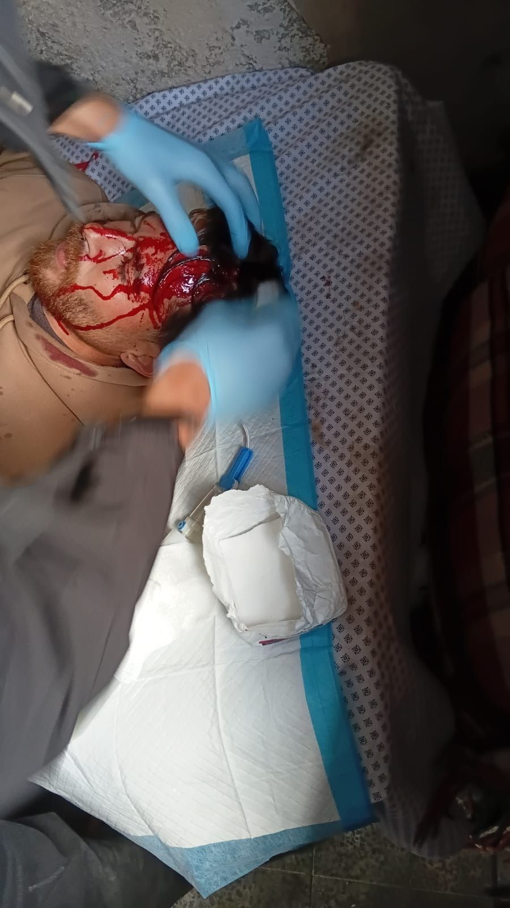

Hilfe, wo jede Minute zählt

Eine kleine Anlaufstelle in einer Notunterkunft in Beit Lahia, im Norden des Gazastreifens. Hier werden Verletzte stabilisiert, bis der Krankenwagen kommt – mit kaum Material und großem Können.
Ein Tag im Medical Point
Verbände wechseln, Medikamente ausgeben, Kinder untersuchen, Blutdruck messen. Bild antippen für die Großansicht.






Ein Junge, zweimal gerettet
Zweimal hat Ibrahim diesen Jungen erstversorgt – ohne Narkose und ohne richtiges Wundmaterial. Die Bilder zeigen Wunden und Verbrennungen.
- Splitter in der Dusche. Der Junge wusch sich in einer selbstgebauten Dusche, als in der Nähe eine Bombe einschlug. Splitter rissen tiefe Wunden in seinen Rücken, die genäht werden mussten.
- Heiße Suppe bei der Essensausgabe. Später, im Gedränge an einer Suppenausgabe, wurde heiße Suppe über seinen Körper geschüttet – schwere Verbrennungen an Schulter, Rücken und Hals.
- Wochen der Behandlung. Ohne Narkose hat Ibrahim die Brandwunden immer wieder gespült, eingecremt und neu verbunden. So konnte er Infektionen verhindern – die Wunden begannen zu heilen.





Wenn jede Minute zählt
8 Bilder von Notfällen anzeigen

Verletzung mit BlutDieses Bild kann belastend sein.Tippen zum Ansehen Verletzung mit BlutDieses Bild kann belastend sein.Tippen zum Ansehen
Verletzung mit BlutDieses Bild kann belastend sein.Tippen zum Ansehen
Verletzung mit BlutDieses Bild kann belastend sein.Tippen zum Ansehen Verletzung mit BlutDieses Bild kann belastend sein.Tippen zum Ansehen
Verletzung mit BlutDieses Bild kann belastend sein.Tippen zum Ansehen Verletzung mit BlutDieses Bild kann belastend sein.Tippen zum Ansehen
Verletzung mit BlutDieses Bild kann belastend sein.Tippen zum Ansehen
Verletzung mit BlutDieses Bild kann belastend sein.Tippen zum Ansehen Verletzung mit BlutDieses Bild kann belastend sein.Tippen zum Ansehen
Verletzung mit BlutDieses Bild kann belastend sein.Tippen zum Ansehen
Verletzung mit BlutDieses Bild kann belastend sein.Tippen zum AnsehenWas gebraucht wird
Notfallmaterial
Material zum Stillen schwerer Blutungen und zur Versorgung von Schwerverletzten.
Verbands- & Nahtmaterial
Kompressen, Binden, Pflaster, Desinfektion, Nahtmaterial.
Medikamente
Antibiotika, Schmerzmittel, Salben für Brandwunden, Mittel für chronisch Kranke.

Für den Medical Point gibt es eine Spendenaktion auf GoFundMe: „Help Nurse Ibrahim Save Lives and Support His Family in Gaza“. QR-Code mit der Handykamera scannen oder direkt öffnen: Zur GoFundMe-Spendenaktion →
Diese Website nimmt kein Geld entgegen und leitet keines weiter. Das Projekt ist eine private Initiative: Spenden sind nicht steuerlich absetzbar, es gibt keine Spendenquittung, und es ist nicht von einer unabhängigen Stelle geprüft. Die Angaben beruhen auf den Schilderungen des Projekts.